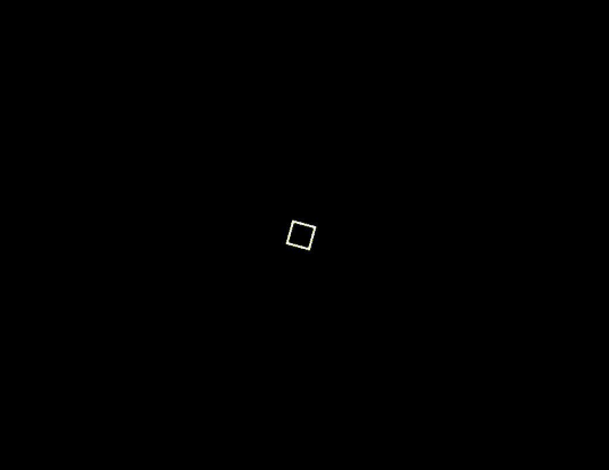

System
Systems are the executers of logic. They are the equivalent of "void Start", void "Update" in Unity, They hook unto the main application loop. Using Systems you can easily implement features in your game thanks to their flexible and modular usage. In a Scene, there are 3 runtimes:
- Start
- Update
- Render
Each runtime can have functions be subscribed to, and those functions will be called according to their order of addition.
Here's an Example
func TestStartSystem(_this_scene *chai.Scene) {
chai.LogF("Test System")
}
Here we declare a new function with a single parameter "_this_scene" of type (Pointer to Scene). All the function does is print a message to the console.
How can I subscribe it to a runtime?
Start Runtime
var app chai.App = chai.App{
Title: "Docs",
Width: 480,
Height: 480,
OnStart: func() {
_test_scene := chai.NewScene()
_test_scene.NewStartSystem(TestStartSystem)
// Transition into this scene
chai.ChangeScene(&_test_scene)
},
}
Here we're subscribing it to the start system of the Scene runtime, That means the function will get called when we first start the Scene.
The reason the function takes a parameter of a pointer to a Scene is that the runtime will pass the scene the function is currently subcribed to through this parameter, for the user to modify.
The Start runtime is usually used to setup the Scene and adding Entities to the Scene
Update Runtime
func TestUpdateSystem(_this_scene *chai.Scene, _delta float32) {
chai.LogF("Test System")
}
var app chai.App = chai.App{
Title: "Docs",
Width: 480,
Height: 480,
OnStart: func() {
_test_scene := chai.NewScene()
_test_scene.NewUpdateSystem(TestUpdateSystem)
// Transition into this scene
chai.ChangeScene(&_test_scene)
},
}
Here we'e subscribing to the Update system of the Scene runtime, That means the function will get called once per frame during the lifetime of the game.
It takes 2 parameters, 1st is the current Scene pointer, and the 2nd is the delta-time between the current frame and the previous frame.
The Update runtime is useful for applying game logic and implementing features
Render Runtime
func TestRenderSystem(_this_scene *chai.Scene, _delta float32) {
chai.LogF("Test System")
}
var app chai.App = chai.App{
Title: "Docs",
Width: 480,
Height: 480,
OnStart: func() {
_test_scene := chai.NewScene()
_test_scene.NewRenderSystem(TestRenderSystem)
// Transition into this scene
chai.ChangeScene(&_test_scene)
},
}
Here we'e subscribing to the Render system of the Scene runtime, That means the function will get called once per frame during the lifetime of the game.
It takes 2 parameters, 1st is the current Scene pointer, and the 2nd is the delta-time between the current frame and the previous frame.
The Render runtime is useful for calling custom drawing commands during runtime
Example
Let's use what we just learned to create an App that has a spinning square in the middle
var rectRotation float32 = 0.0
func RectStartSystem(_this_scene *chai.Scene) {
_this_scene.NewUpdateSystem(RectUpdateSystem)
_this_scene.NewRenderSystem(RectRrenderSystem)
chai.Shapes.LineWidth = 1
}
func RectUpdateSystem(_this_scene *chai.Scene, _delta float32) {
rectRotation += _delta * 5.0
}
func RectRenderSystem(_this_scene *chai.Scene, _delta float32) {
chai.Shapes.DrawRectRotated(chai.Vector2fZero, 0.0, chai.NewVector2f(20.0, 20.0), chai.WHITE, rectRotation)
}
var app chai.App = chai.App{
Title: "Docs",
Width: 480,
Height: 480,
OnStart: func() {
_test_scene := chai.NewScene()
_test_scene.NewStartSystem(RectStartSystem)
// Transition into this scene
chai.ChangeScene(&_test_scene)
},
}
func main(){
chai.Run(&app)
}
output

There's a lot to unfold here
- We declared a new variable that will hold the Rect's rotation.
- We declared a new function that will be added to the Start runtime.
- Now instead of subscribing the Update and Render functions in the "OnStart" function, we did it in the Start runtime function, Why? So that this turns this function into a template, So that if any other scene would like similar results then all they need is to subscribe this function to their Start runtime.
- We change the value of a float "LineWidth", inside an object called Shapes belonging to Chai.
- In the Update function, we're only incrementing the rotation.
- Now in the Render function, we're calling onto an object in chai called "Shapes" that holds all the functions needed to draw Shapes onto the screen, then we're calling the function "DrawRectRotated" that takes in
- Center
- Z
- Dimensions
- Color
- Rotation (in degrees)
- Then we run the app in main